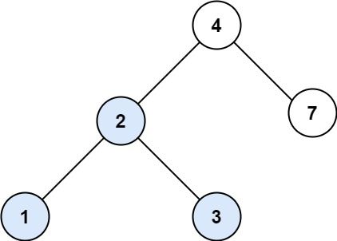

books / company-solutions / Tree
700. 二叉搜索树中的搜索
| 题目信息 | 内容 |
|---|---|
| 难度 | 简单 |
| 核心模式 | 利用 BST 有序性二分下降 |
| 时间复杂度 | O(h) |
| 空间复杂度 | O(1) |
题目与约束
给定二叉搜索树（BST）的根节点 root 和一个整数值 val。
你需要在 BST 中找到节点值等于 val 的节点。 返回以该节点为根的子树。 如果节点不存在，则返回 null 。
示例 1:

输入：root = [4,2,7,1,3], val = 2
输出：[2,1,3]
示例 2:

输入：root = [4,2,7,1,3], val = 5
输出：[]
提示：
-
树中节点数在
[1, 5000]范围内 -
1 <= Node.val <= 107 -
root是二叉搜索树 -
1 <= val <= 107
核心不变量
对 BST，若
val小于当前节点值则目标只可能在左子树，大于则只在右子树，相等即命中。
完整推导
思路推导
-
BST 的有序性：二叉搜索树中，任一节点左子树的所有值都小于它，右子树的所有值都大于它。因此查找无需遍历整棵树。
-
二分式下降：从根出发比较当前节点值与
val： -val < root.val→ 目标只可能在左子树，root = root.left； -val > root.val→ 目标只可能在右子树，root = root.right； -val == root.val→ 命中，直接返回当前节点。 -
结束条件：走到
null说明树中没有该值，返回null。整个下降过程只沿一条路径走，长度为树高 h。
小例子：root = [4,2,7,1,3], val = 2：2 < 4 去左子树到节点 2，命中，返回以 2 为根的子树 [2,1,3]。
Java 实现（searchBST）
/**
* Definition for a binary tree node.
* public class TreeNode {
* int val;
* TreeNode left;
* TreeNode right;
* TreeNode() {}
* TreeNode(int val) { this.val = val; }
* TreeNode(int val, TreeNode left, TreeNode right) {
* this.val = val;
* this.left = left;
* this.right = right;
* }
* }
*/
class Solution {
public TreeNode searchBST(TreeNode root, int val) {
// 沿一条路径二分下降：只有 val 与当前值比较决定方向
while (root != null && root.val != val) {
root = val < root.val ? root.left : root.right;
}
// root 可能是命中的节点，也可能是 null
return root;
}
}
复杂度
- 时间：O(h)，h 为树高，只沿一条从根到叶的路径下降；最坏（退化成链）O(n)，平均（平衡）O(log n)。
- 空间：O(1)，迭代写法只用了常数个指针变量，无需递归栈。
易错点与扩展（面试高频考点）
- 误用普通二叉树思路：不利用 BST 性质而全树搜索会把 O(h) 退化成 O(n)，失去题目考察点。
- 返回的是子树根：题目要求返回以命中节点为根的整棵子树，而不是只返回值；直接返回该
TreeNode即可。 - null 处理：走到空节点必须返回
null，循环条件root != null已自然覆盖。 - 递归 vs 迭代：递归写法是
return val < root.val ? searchBST(root.left, val) : searchBST(root.right, val)，迭代更省栈空间。 - 值域注意：
Node.val最大10^7，在 int 范围内，安全。
力扣原题
C++ 实现
/**
* Definition for a binary tree node.
* struct TreeNode {
* int val;
* TreeNode *left;
* TreeNode *right;
* TreeNode() : val(0), left(nullptr), right(nullptr) {}
* TreeNode(int x) : val(x), left(nullptr), right(nullptr) {}
* TreeNode(int x, TreeNode *left, TreeNode *right) : val(x), left(left), right(right) {}
* };
*/
class Solution {
public:
TreeNode* searchBST(TreeNode* root, int val) {
while (root && root->val != val) {
root = (val < root->val) ? root->left : root->right;
}
return root;
}
};
Python 实现
# Definition for a binary tree node.
# class TreeNode:
# def __init__(self, val=0, left=None, right=None):
# self.val = val
# self.left = left
# self.right = right
class Solution:
def searchBST(self, root: TreeNode | None, val: int) -> TreeNode | None:
while root and root.val != val:
root = root.left if val < root.val else root.right
return root